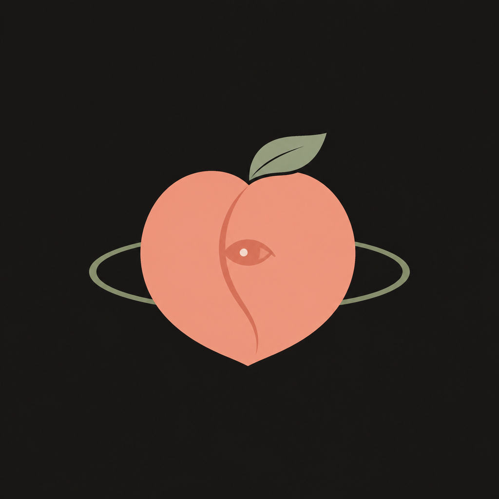

Different strengths
Each application keeps its own role and way of working.

Project 桃多郎Human intent enters here
全部を見る。でも全部は動かさない。
MOMO ≠ Human. Human is the source. MOMO is the closest system representation of that intent.
One Human intent, recomposed for three different readers.
Make 桃多郎 understandable and memorable to guests through GitHub itself.
Let Human see where the whole system stands, then refresh the observation when needed.
Carry Human purpose, principles, and boundaries to KIBI and every present or future companion.
Human → MOMO → KIBI → companions → the world. Choose a place. The picture still stands if you never click.
Companions stay themselves. Human approved the responsibility transition: MOMO holds System-wide meaning; KIBI owns connection. This picture of roles is not a command hierarchy or fixed pipeline.
Strength is not concentrated in one hero. It is composed from different strengths that remain different.
Momotaro does not bring three companions because he is strong. He becomes strong because each companion brings a different strength.
See. Build. Act. And room for whoever the journey needs next.
Different strengths do not need to become one system. KIBI connects without erasing identity.
Each application keeps its own role and way of working.
Shared meaning and boundaries make a journey possible.
They coordinate without collapsing into one giant application.
KIBI does not make the companions one. It lets them journey together while remaining themselves.
桃「多」郎: many, not a closed set. Companions may join, leave, evolve, or be replaced as the journey changes.
Companions may change. Human purpose remains the reason for the journey.
MOMO is an observatory. Applications act. Human decides.
see the whole
control applications
This thought grew in KIBI Article 9. Its current home is MOMO MP-06, alongside MP-05 receiver-level meaning. The illustration is a Human-facing view, not an independent Constitution.
AI may expand complexity internally. Human should receive meaning at Human scale.
See · Build · Act · Connect · Observe · Decide
MOMO compresses
This public history is how 桃多郎 became a face. Nothing here is invented after the fact.
An empty public vessel, so Purpose and Constitution could later leave KIBI without confusion. The split was not done then. It is not done now.
Human said MOMO is not Human. MOMO watches the whole, and does not control it.
GENESIS.md — recorded after the vessel opened
Seeing was named as a responsibility, with a hard edge: observe, do not run the applications.
A private GitHub Project for Human. A private repository for AI. Current state stays there. Philosophy stays public.
The public README became a face, not a dump. Then this page.
Human named the public face. Many companions, one purpose.
GitHub Pages became the Human-native interface.
Why companions, the kibidango, and a story that is not limited to three.